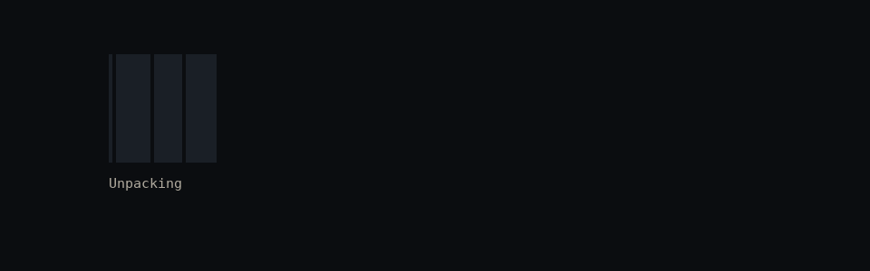
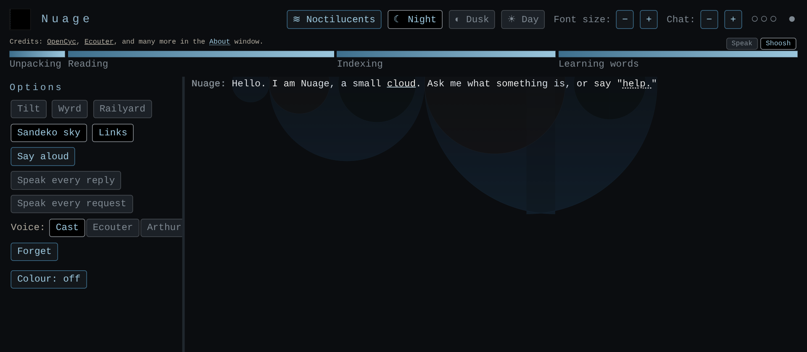
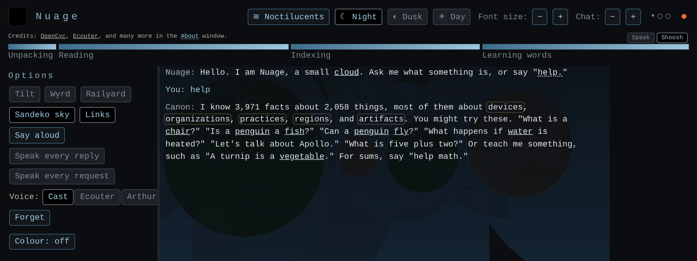
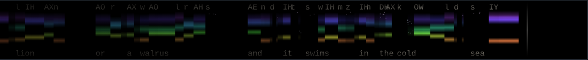
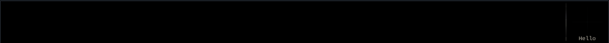
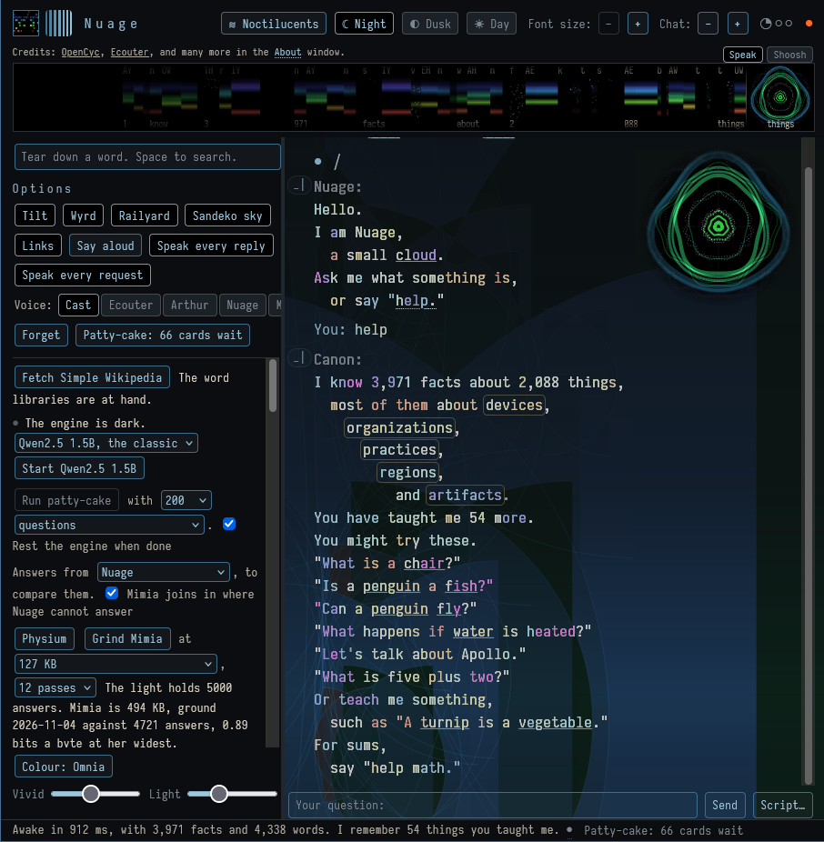
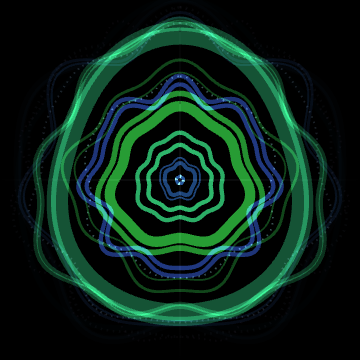

Nuage
A small talking cloud. A classic chat engine with no model inside, in one page, offline, in four cuts. Open one and she wakes; nothing leaves the page.
Try her
Each is one file. Save it and it works from your disk. What you teach her is kept in your browser alone. The sizes are aims, not oaths; the manifest says what each came to.
Seen


Awake, under the sandeko sky.

"help", clicked: the Canon answers, every clause in its ring.

The strip: pitch in colour, the phones above, the words below.
Her hello, at the pace she speaks it: the strip, the phones, the words, and the wall. (as mp4)

User1's own settings: Tilt, Omnia at Vivid 44 and Light 32, Wyrd, Railyard, the sandeko sky, the intro playing. The Patty-cake panel at the left is the workshop's; the rest is in every cut.

A fleuriant, mid-word: the wall the voice strikes. Scintillate.What to say to her
- "What is a kettle?" "Is a penguin a fish?" "Can a penguin fly?" "What happens if water is heated?"
- "A turnip is a vegetable." "Things are not alive." "A dish holds food in a bowl." She keeps what you tell her, in your words, and gives it back on waking.
- "Draw the sound of glimmer." (the 256 and up) "Say aloud" reads any line in Ecouter's voice, or hers.
- "Help." "Notes." "What have I taught you?" "What have we talked about?"
Tilt airs a reply out at every stop and comma, then tilts the joints inside. Sandeko draws a circle about every sentence and every clause, over the whole talk and the line you are typing. Colour sets each letter in the colour of its pitch. The voice has a strip, a square, and a wall.
What she is made of
A LISP reader and Cyc's forms, stripped to bytes and bone. Ecouter, a formant synthesizer in one file, and four voices that are operations on his frames. Wallbreaker's tilt. The rings of Vespers. Mimia, a mirror of balanced-ternary weights, five trits a byte, ground from the light of a local model with commerce kept out. A punctuation table grated from Simple English Wikipedia. No samples, no network, no model.